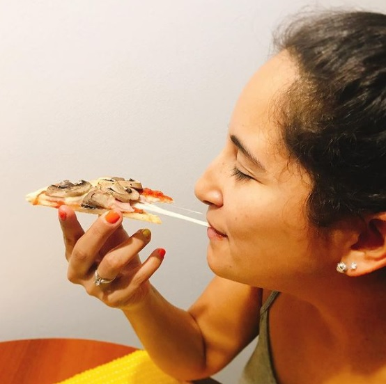

Healthy Pizza

Pizzas are one of my favorite meals, and I know is in your top 5! It is very hard to find a healthy version of this delicious dish,
so I encourage you to do by yourself at home.
I know you might think I don't have much time to do pizza dough, and that's why I made this alternative recipe that you will be
able to do it in less than 30 minutes!!
To make a pizza healthy there are four main points to keep in main that would make a huge difference.
- Homemade thin crust: This is a key element will reduce significantly the amount of calories per porcion, and today I will
show how to make it.
- Sauce: Use a simple homemade sauce, could pe a pesto sauce or a tomato sauce, which recipe you will find it here.
- Cheese: Use a limited amount of low fat cheese like ricotta cheese, cottage cheese,goat cheese or -if you find- a light version
of mozzarella cheese.
- Toppings: Add as many vegetable you want/can and try to avoid any processed food like pepperoni, ham, bacon and so.
Now that we have these main points in mind, let's cook our homemade pizza dough.
Ingredients:
- 2 teaspoon dry active yest
- 1/2 cup warm watter
- 1 teaspoon coconut sugar or honey
- 2 1/2 cup old-fashioned oats
- 1/2 tablespoon pink salt
- 1 tablespoon olive oil
- 1 teaspoon ground garlic
Directions:
- First, preheat your oven to 450°F or 230°C degrees.
- In a bowl whisk the yeast, water and sugar or honey. Let this set for a little while so yeast can develop, thi take about 5 minutes.
- While the yeast is developing, put the oats in a blender or food processor and grind the heck out of them, to make oat flour.
- Reserve a 1/4 cup of the oat flour, put the remaining oat flour in a bowl with pink salt and mix.
- Add the yeast mixture, oil and garlic and mix everything by hand.
- Divide into two even dough balls; knead each until smooth (alternatively, you can freeze one dough ball).
- On a lightly floured surface, roll out each dough ball into a 1/4-inch thick circle.
- Place it in non-stick pan or one coated with cooking spray. Shape the edges of dough by pressing against your hand. The edges need
to be relatively smooth.
- Now it is time to bake the crust for 7-8 minutes. Meanwhile, you can make the sauce and prepare the toppings!
- Remove the crust carefully from the oven and add the sauce, cheese and your favorites toppings.
- Finally, bake for 9-10 more minutes or ultil crust is gold brown and good appetite!
And that's it! See? I told you making your own pizza crust wasn’t difficult and won't take much time!
Let me know what you would top this oat flour pizza crust with. I’m always looking for more pizza ideas. Have a great weekend!